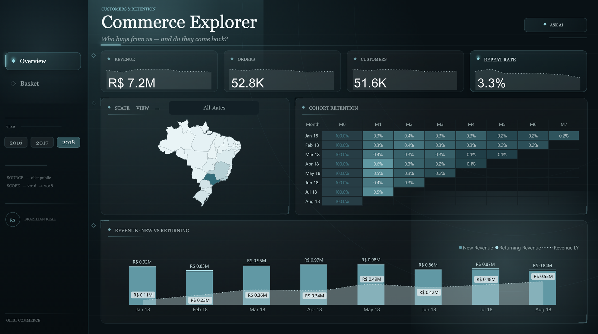
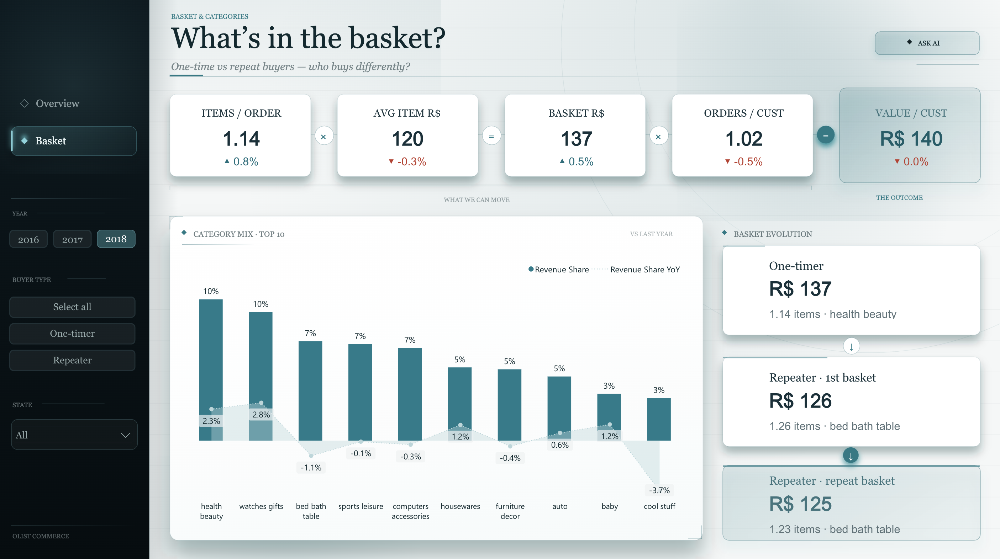
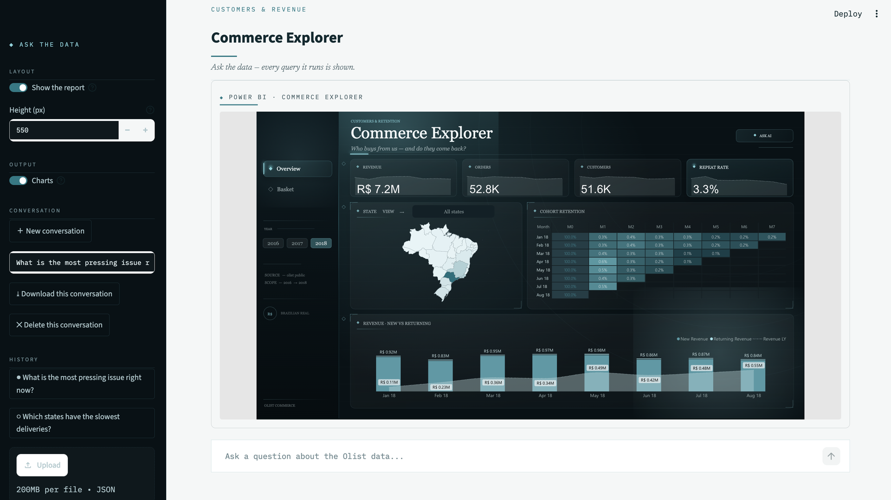
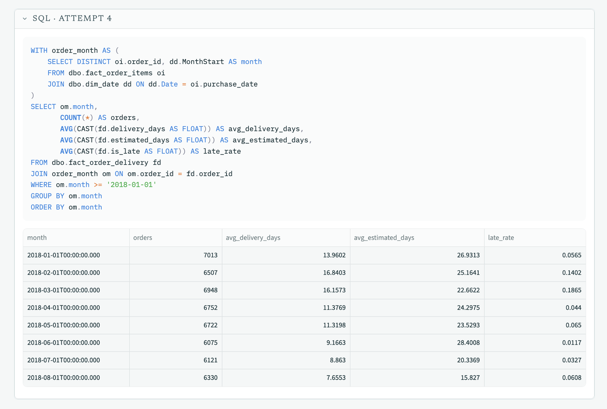
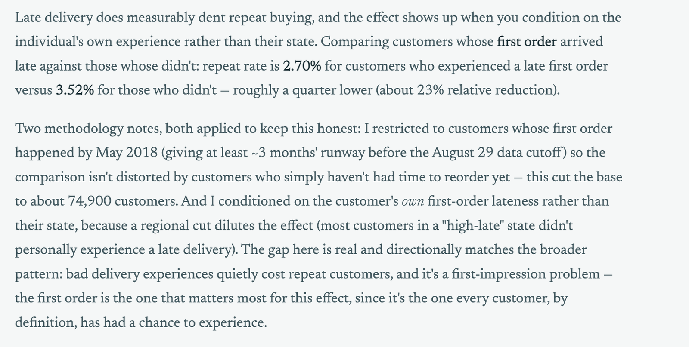

Project · Olist Commerce Explorer
Natural language over a warehouse. Can you trust what it tells you?
An end-to-end Microsoft Fabric build — raw CSVs through to a Power BI report — with a chat layer that writes its own T-SQL against the gold tables. It answered one question confidently and wrongly. This is how that was caught, and what it changed.
- Build
- Lakehouse → Warehouse → semantic model → report, plus a natural-language Q&A layer
- Role
- Sole build — pipeline, model, report, app
- Source
- Olist Brazilian e-commerce, public
- Scale
- 96,478 delivered orders · 93,358 customers · R$13.2M
- Period
- 2016 – 2018
- Pipeline
- Bronze files → Delta tables → silver views and gold tables in T-SQL
- Model
- Direct Lake star schema — two facts, three dimensions
- Report
- Two pages — customers and retention, basket and categories
- AI layer
- Streamlit + Claude Sonnet — writes T-SQL, runs it, answers from the rows
- Auth
- Microsoft Entra service principal to the Warehouse SQL endpoint
- Stack
- Microsoft Fabric, Power BI, T-SQL, DAX, Python, Streamlit, Anthropic API
The demo
Sixty-five seconds: the report, a question asked in plain English, the SQL it wrote, and the architecture underneath. Captions are burned in — sound is optional.
The question
A report is built to answer a defined set of questions well, and to keep answering them the same way every week. That is the job of the overview layer, and it is worth protecting: when the headline numbers are settled, nobody spends the first ten minutes of a meeting arguing about them.
The questions that come after the overview are a different shape. They are specific, they are usually asked once — did the customers who waited longest come back? — and none of them justifies a new page. The honest answer has always been: give me a day and I will write the query.
So this project adds a second way in beside the report rather than instead of it. The dashboard carries the shared picture; the Q&A layer takes the deep-dive that follows from it. The one condition I would not give up is that the query has to be visible. A number you cannot trace is not an answer, it is a suggestion.
The pipeline
Nine raw CSVs land in a lakehouse Files folder, untouched — nothing cleaned, nothing renamed. Keeping the landing raw is what makes everything downstream reproducible: if a transform is wrong, I rerun from there rather than re-downloading. They are converted to Delta tables, at which point the data stops being files and starts being queryable.
One thing worth knowing if you try this: a CSV usually converts to Delta in seconds, but not if it contains free text. The review file has commas inside the review bodies and will not load cleanly. That needs a Spark notebook or a Dataflow first — I used a Dataflow, being more at home in M query.
In the Warehouse, silver is views rather than tables: type casts, date parsing, the joins between orders and items. The boring correctness work, done once, in one place, so it cannot drift between reports. Gold is five tables shaped for questions rather than for storage — two facts and three dimensions.
The split between the two facts is the most important decision in the model.
fact_order_items is one row per line item; fact_order_delivery is
one row per order. Delivery days and review scores live at order grain. Average them off the
item table and every order containing three items counts three times — the number looks
perfectly reasonable and is quietly wrong. Everything else in this project is downstream of
getting that right.
The report
Two pages on a Direct Lake semantic model over the gold layer. One direction of filtering, measures defined once.


No live report link here, unlike the other write-ups: the capacity behind it is a Fabric trial, and publishing to the web needs a paid one kept running. These are screenshots of the working report.
The Q&A layer

Ask a question in English. The model writes T-SQL, the app runs it against the Warehouse SQL endpoint, and the rows that come back are fed to the model to phrase an answer — with a chart when a picture carries the finding better than a sentence.
The design decision I would defend: the chat layer queries the gold tables directly over SQL, not the semantic model. An LLM writes reliable SQL against a small, well-described schema. Asking it to navigate DAX and relationships is a harder problem for no extra benefit, and the schema is compact enough to state completely in the prompt — including the grain of every table and the rule for crossing between them. That prompt is most of the reason the answers hold up.
This started as an attempt to use Power BI's own Copilot, which does exactly this natively. It needs a paid Fabric capacity — F2 or above — or Premium P1+; trial capacities are not supported. Mine is a trial, so the Q&A layer is an app rather than a pane.
Every query is on screen

This is the part I care about more than the chat. Every query the model writes is displayed with the rows it returned, including the failed attempts. A text-to-SQL tool you cannot audit is a liability rather than a feature — and the next section is why that is not a rhetorical point.
Guardrails sit underneath it: generated SQL is parsed and rejected unless it is a single
SELECT, results are capped, errors go back to the model with the remaining
attempt budget attached, and a repeated error is called out as a repeat so the model changes
approach instead of resubmitting a cosmetic variation.
Where it got it wrong
Asked whether late delivery had hurt repeat purchasing, the model compared customers in states with high late-delivery rates against everyone else: 2.9% versus 3.0%. Essentially no difference. Well written, plausible, and wrong.
Living in a high-late state is not the same as having had a late delivery. Only about 6.5% of orders arrive late, so both sides of that comparison are overwhelmingly people whose orders turned up on time, and the effect washes out. Condition on the customer's own first order instead and it is 2.70% against 3.52% — about 23% lower, on 5,565 and 69,286 customers, and statistically significant.

A second run turned up a subtler one. Two runs returned exactly the same 74,851 customers but
different repeat rates — 3.75% and 3.52%. One had averaged over order items,
so a first order containing three items counted three times. There is a general tell in that,
and it is now written into the prompt: if a query needs COUNT(DISTINCT ...) to
count correctly, then AVG() over those same rows is wrong. They cannot both be
right in one SELECT.
Neither was catchable without reading the SQL. That is the whole argument for building it this way, and I would rather demonstrate it with a real failure than assert it.
What I changed — and what I deliberately didn't
The instinct is to make the prompt prescriptive: write down the right query for every question and the variation stops. I did not do that, because the run that needed a follow-up from me is the run that found the real story — that delivery times were getting faster (9.2 to 7.7 days) while the promised window shrank faster still (28 to 16). Not a carrier problem, an estimate problem. A rigid prompt would have cost me that.
So the rules I added constrain which comparison is valid, not which query to write:
- Attach the condition to the individual, not their region. A regional cut dilutes an effect toward nothing when the condition is rare.
- Say what one row is before you average it. Customer attributes are averaged over one row per customer, not per item.
- Condition on the first order, not on ever. Customers with more orders have more chances to receive a late one, which reverses the correlation.
- Leave runway before the data ends. Someone who bought last month has not had time to come back.
- Where two queries could both be right, pick one and write it down — what counts as an order, how nulls are handled, what “top” means, how ties break. This is what holds the numbers steady between runs.
How it's built
Fabric's SQL endpoint has no SQL authentication — it is Microsoft Entra or nothing. The app connects as a service principal over ODBC, with one wrinkle worth recording: connecting to the SQL endpoint does not by itself mint the token, so a Fabric REST call has to happen first or the login fails with a misleading error.
The conversation runs as a tool-use loop — the model is given a run_sql
tool and a plot tool, and iterates until it has an answer or exhausts its
budget. Charts are a closed specification the model fills in rather than code it writes, so a
chart can fail validation without breaking the page.
The parts that took longest were not the interesting ones: making sure a turn can never end with nothing on screen, that a half-written tool call is never left dangling, and that a currency figure like R$953K is escaped before rendering rather than being silently parsed as LaTeX. The message bookkeeping has its own offline test suite that runs the whole control flow against a fake client.
Limitations
- The wording varies between runs. This API generation removed temperature and the other sampling controls, so identical questions can be phrased differently. The numbers are held steady by the consistency rules above, which is the part that matters; the prose is not.
- The schema is stated, not discovered. Five tables are small enough to describe completely in a prompt. This approach would need rethinking at fifty.
- It can still be wrong. The rules close the failure modes I found by testing. They do not close the ones I haven't hit yet, which is why the SQL stays on screen.
- Public data, no client context. Olist is a marketplace where most purchases are one-off or gifts, so the repeat rate is around 3% across the board. The relative effects are real; the absolute levels are specific to this business.
Why it isn't published
The app runs locally rather than on a public URL, deliberately. A published link would let anyone spend my Anthropic credits, and the demo keeps the live Fabric connection rather than a snapshot — which is the part worth showing. The video above is the whole thing running against the real warehouse.
Independent portfolio exercise on the public Olist Brazilian e-commerce dataset. Built alongside preparation for DP-600, Microsoft's Fabric Analytics Engineer certification.